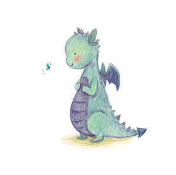

Блог обычного человека
Просто блог просто обычного человека. Заметки о жизни, мыслях, мечтах, не ограниченные никакими рамками.
Просто блог просто обычного человека. Заметки о жизни, мыслях, мечтах, не ограниченные никакими рамками.
Новый год совсем близко... А вы уже составили список дел на 2024 год? Я да, и рекомендую к прочтению. Делитесь своими планами в комментариях!
Уже в своей предыдущей заметке мы начали разбирать все произошедшее в 2023. Но тогда мы сконцентрировались лишь на негативной части. А теперь давайте я расскажу вам о кое-чем грандиозном!
Что ж, начался декабрь, самое время провести анализ уходящего года. Начнем с плохого, продолжим хорошим. К сожалению, у меня весьма много новостей для обеих частей этого анализа.
Или (не)краткая история о неправильно назначенном лечении. Всем здоровья, друзья! Краткая мораль всей истории — не сдавайтесь и ищите своего врача.
История о том, почему нужно внимательнее относится к своему здоровью и не рисковать перед ответственными мероприятиями.
Первые соревнования после двухлетнего перерыва. Какие ставки, ожидания? Какой была подготовка? Вообще, в чем смысл этих стартов.